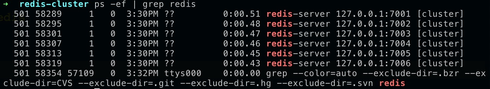
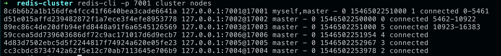
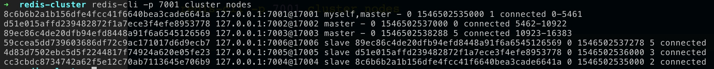

Mac 本地搭建 redis 集群服务
- 前提
- 目的
- redis集群目录准备
- 集群中每个节点的配置文件 conf 修改
- 启动集群中的每个机器
- 运行 redis 集群
- 集群相关命令
- 关闭集群，需逐个关闭每个节点
- 注
- redis 集群在线水平扩容 -- 再添加一主一从 7007 7008
前提
mac 电脑已经通过 homebrew 安装好了 redis 服务
目的
建立 3主3从 的redis集群
redis集群目录准备
cd /usr/local
## 切换root账号, 新建集群目录文件，修改文件权限
mkdir redis-cluster
chown xuzhihua:admin redis-cluster
chmod 775 redis-cluster
## 退出root账号
exit
## 新建集群目录文件， 这里的7001-7006 其实是指定集群中每台redis的端口。 用一台机器多个端口模拟多台机器的集群活动
cd redis-cluster
mkdir 7001;mkdir 7002;mkdir 7003;mkdir 7004;mkdir 7005;mkdir 7006
集群中每个节点的配置文件 conf 修改
从单机的redis中复制 conf 到集群目录中
cp /usr/local/etc/redis.conf /usr/local/redis-cluster/7001
## 编辑 redis.conf
/usr/local/redis-cluster/7001
vi redis.conf
## 修改如下内容
daemonize yes
port 700* ##(分别对每个机器的端口进行制定)
bind 127.0.0.1
dir /usr/local/redis-cluster/700*
cluster-enabled yes ##(启动集群服务)
cluster-config-file nodes-700*.conf ##(这里的700*和port对应上)
cluster-node-timeout 5000
appendonly yes
## 然后将7001 中的redis.conf 复制到 7002-7006， 修改其中的 700*
启动集群中的每个机器
redis-server /usr/local/redis-cluster/7001/redis.conf
redis-server /usr/local/redis-cluster/7002/redis.conf
redis-server /usr/local/redis-cluster/7003/redis.conf
redis-server /usr/local/redis-cluster/7004/redis.conf
redis-server /usr/local/redis-cluster/7005/redis.conf
redis-server /usr/local/redis-cluster/7006/redis.conf
查看有多少个redis在运行
ps -ef | grep redis
## 有6个节点，说明每个节点都正常启动了

运行 redis 集群
手动执行
关联所有节点
## 连接 7001 机器
redis-cli -p 7001
## 然后执行
cluster meet 127.0.0.1 7002
cluster meet 127.0.0.1 7003
cluster meet 127.0.0.1 7004
cluster meet 127.0.0.1 7005
cluster meet 127.0.0.1 7006
## 此时 所有节点都关联起来了，进入 /usr/local/redis-cluster/700* 目录中，可以看到 nodes-700*.conf 有内容了
分配slot
redis的cluster是由16384个slot组成的，那么我们需要将这些槽分散到这其中3个主节点里(3主3从)
## 在退出 redis-cli 的情况下执行
redis-cli -p 7001 cluster addslots {0..5461}
redis-cli -p 7002 cluster addslots {5462..10922}
redis-cli -p 7003 cluster addslots {10923..16383}
## 验证分配槽的情况
redis-cli -p 7001 cluster nodes

主从复制
redis-cli -p 7004 cluster replicate 7001的nodeID
redis-cli -p 7005 cluster replicate 7002的nodeID
redis-cli -p 7006 cluster replicate 7003的nodeID
## 验证主从复制情况
redis-cli -p 7001 cluster nodes

到这一步就ok
redis-trib.rb 执行
redis提供了一个 redis-trib.rb (ruby 编写的)。未在本机执行过
```zsh
redis-trib.rb create --replicas 1 127.0.0.1:7001 127.0.0.1:7002 127.0.0.1:7003 127.0.0.1:7004 127.0.0.1:7005 127.0.0.1:7006
redis-trib.rb add-node 127.0.0.1:7007 127.0.0.1:7008
redis-trib.rb reshard 127.0.0.1:7007
## 连接 redis 集群的 客户端
```zsh
## -c cluster; -h host; -p port
redis-cli -c -h 127.0.0.1 -p 7001
集群相关命令
## 集群信息
cluster info
## 集群中节点信息
cluster nodes
## 查看集群帮助
cluster help
关闭集群，需逐个关闭每个节点
redis-cli -c -h 127.0.0.1 -p 7001 shutdown; redis-cli -c -h 127.0.0.1 -p 7002 shutdown; redis-cli -c -h 127.0.0.1 -p 7003 shutdown; redis-cli -c -h 127.0.0.1 -p 7004 shutdown; redis-cli -c -h 127.0.0.1 -p 7005 shutdown; redis-cli -c -h 127.0.0.1 -p 7006 shutdown; redis-server /usr/local/redis-cluster/7007/redis.conf;redis-server /usr/local/redis-cluster/7008/redis.conf;
## 关闭后重启启动集群，只需要启动每个节点就可以
redis-server /usr/local/redis-cluster/7001/redis.conf;redis-server /usr/local/redis-cluster/7002/redis.conf;redis-server /usr/local/redis-cluster/7003/redis.conf;redis-server /usr/local/redis-cluster/7004/redis.conf;redis-server /usr/local/redis-cluster/7005/redis.conf;redis-server /usr/local/redis-cluster/7006/redis.conf;redis-server /usr/local/redis-cluster/7007/redis.conf;redis-server /usr/local/redis-cluster/7008/redis.conf;
注
当集群无法启动，删除临时的数据文件，再次重新启动每一个reidis服务，然后重新构造集群环境
redis 集群在线水平扩容 -- 再添加一主一从 7007 7008
添加 7007 7008目录
## 添加 7007 7008目录
cd /usr/local/redis-cluster
mkdir 7007; mkdir 7008
## 将 7001 中的 redis.conf 复制到 7007 7008 中，并修改 里面的 700*
启动 7007 7008
## 启动 7007 7008
redis-server /usr/local/redis-cluster/7007/redis.conf; redis-server /usr/local/redis-cluster/7008/redis.conf;
关联7007 7008节点、设置主从、重新分槽
## 连接集群客户端
redis-cli -c -p 7001
## 关联 7007 7008
cluster meet 127.0.0.1 7007
cluster meet 127.0.0.1 7008
## 退出集群客户端
## 设置主从
redis-cli -p 7008 cluster replicate 7007的nodeID